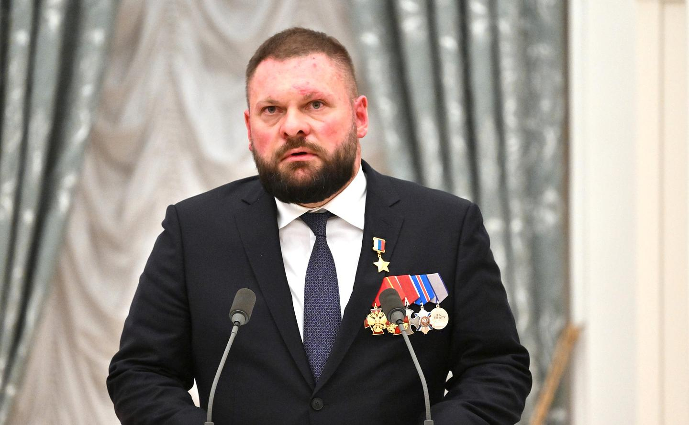

War correspondent. Deputy. The face of war on state TV.

VGTRK's face of "frontline truth" — in Libya, Syria, Donbas, and the Duma.
Born in Stavropol. Studied journalism. Joins VGTRK in the mid-2000s and quickly specializes in conflict zones.
Becomes one of VGTRK's leading war correspondents during the Arab Spring. Reports from Libya and Syria — with a Russian perspective on events. Forms the image of the "Russian war correspondent" who fears no frontline.
Works in the combat zone in the Donbas from the first days of the conflict. His reports are among the most-watched on VGTRK. Creates an enduring image: a brave war correspondent against "Nazis" and "chaos." Becomes the flagship of state television.
Continues working in conflict zones — Syria, Libya, then Donbas again. Recipient of state awards. In 2021 is elected to the State Duma on United Russia's party list.
Works at the frontline from the first days of the full-scale invasion. His reports are the main "pictures from the front" for Russian audiences. EU, UK and Canadian sanctions.
Combines his parliamentary mandate with field reporting. Uses the Duma platform to legitimize the war. One of the most recognizable faces of state television among younger audiences.
Poddubny works through image, not ideology. He doesn't scream in a studio — he stands under fire. This format works for audiences tired of political talk shows: it appears he's simply "showing it as it is." In reality, every report is inscribed within the state narrative: the enemy is predetermined, sympathies are pre-directed, the conclusion is already known. Interp.
EU personal sanctions since 2022 — for spreading disinformation and state propaganda about the war in Ukraine. The UK and Canada introduced equivalent restrictions. Entry banned.
All claims in this dossier are based on open public sources. Facts marked Fact have direct primary sources. Marked Interp. are editorial assessments of documented events.